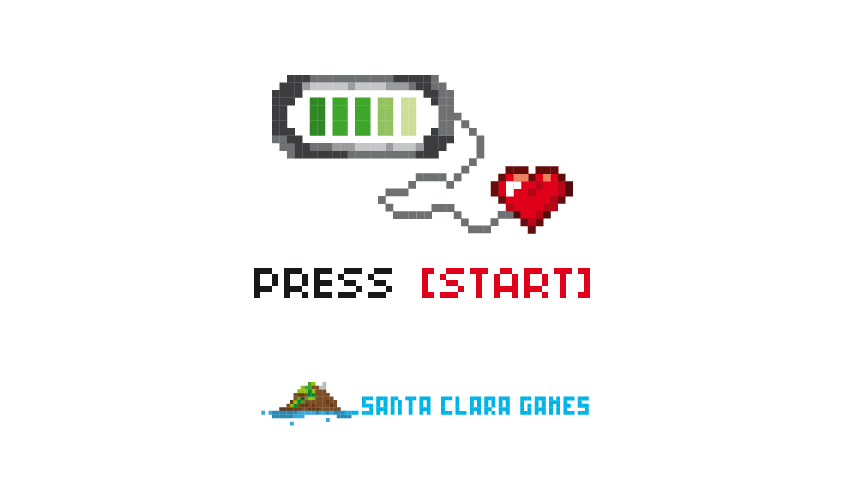

Press [START]
Hey everybody, we just launched our new website! Here you can get all
the latest news on our video games, technical articles on our
discoveries and developments, and stories about the crazy messes we get
ourselves into, our events, and our experiences with both gamers and
developers.
In 2013, three friends with equally wild imaginations started up this
studio in order to create our first game called "Hassleheart", based
on an idea we started in the Global Game Jam:
You are a heartless robot, living on a cheap battery that's running out fast. Like the Tin Man, you want a human heart. Unlike the Tin Man, you're going to have to kill for it.
Have a heart, and follow your hearts, and soon you will heart hearts like us! If you take us to heart, we promise to continue delivering this and many more fun and bizarrely addictive games.
Nice to meet you!
Iñaki - Alex - Mike
